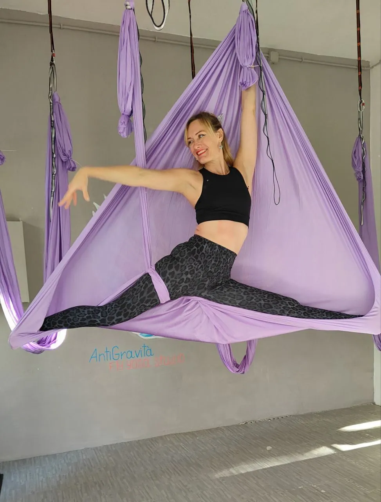
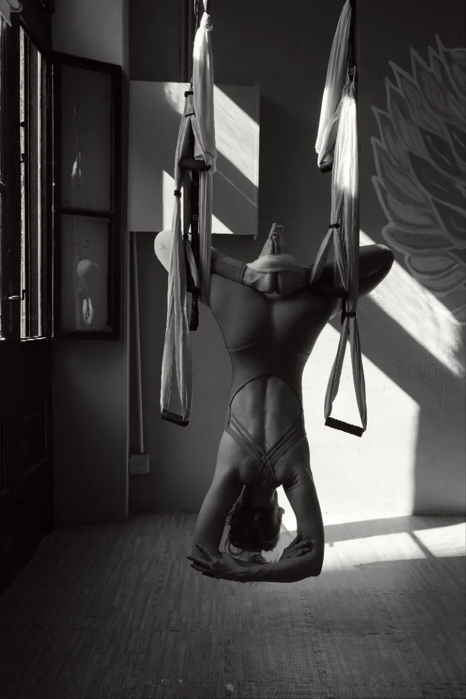
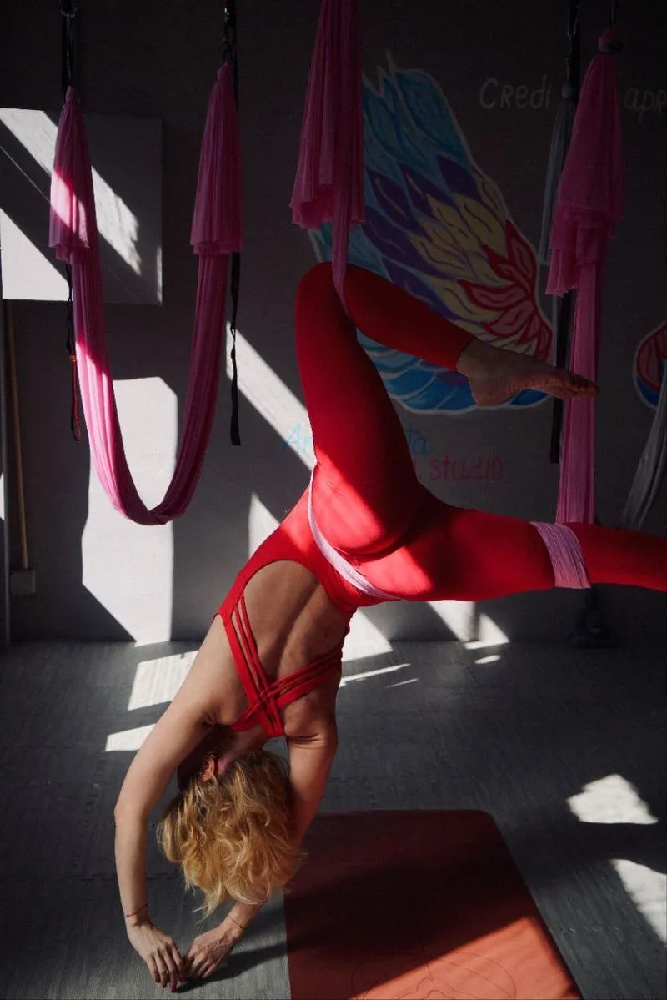
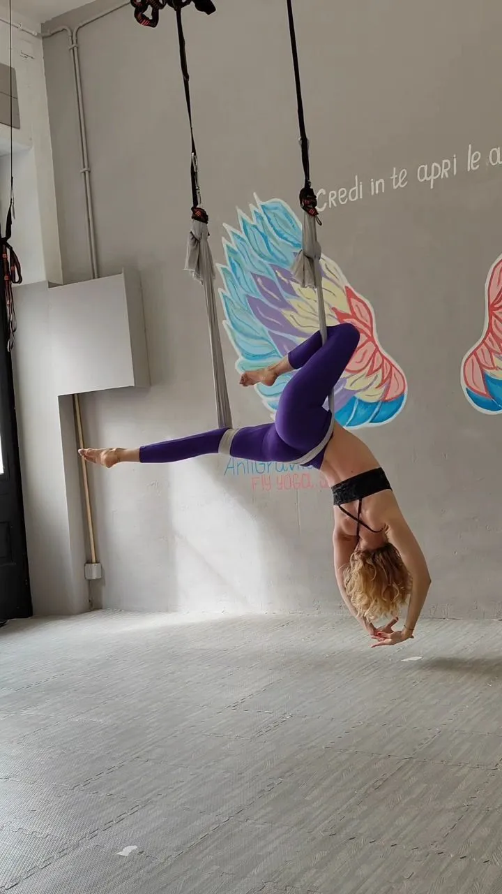

Yoga Trieste e Massaggi Trieste: Fly Yoga e Benessere per Corpo e Mente
AntiGravità è lo studio dove Yoga Trieste e Massaggi Trieste camminano insieme: un unico spazio per ritrovare leggerezza, energia ed equilibrio.
Fly Yoga: lo Yoga Trieste che ti solleva
Se cerchi un corso di Yoga Trieste diverso dal solito, il Fly Yoga è quello che fa per te. Con il sostegno dell'amaca uniamo i principi dello yoga tradizionale alla decompressione della colonna: il peso del corpo si alleggerisce e ogni movimento diventa più fluido.
È una pratica che prepara bene il corpo anche ai benefici di un buon Massaggio Trieste: migliora flessibilità e postura passo dopo passo, sempre in sicurezza e senza forzature.
Scopri il Fly Yoga Trieste
Massaggi Trieste: il tocco che rimette in equilibrio
Per me i Massaggi Trieste non sono solo un momento di coccola: sono una parte concreta del prendersi cura di sé. Dopo una sessione di Yoga Trieste il corpo è morbido e ricettivo, e il lavoro manuale arriva più in profondità.
Per questo costruisco percorsi su misura — dal massaggio decontratturante a quello rilassante — così da prolungare l'effetto della pratica e farti ritrovare energia e respiro.
Esplora i Massaggi Trieste
Yoga Trieste: respiro e consapevolezza
Lo studio di Yoga Trieste AntiGravità è uno spazio accogliente dove tornare ad ascoltarsi. Praticare con continuità, alternando il lavoro a terra e in volo a cicli di Massaggi Trieste, è il modo più semplice per mantenere nel tempo un corpo libero e una mente più calma.
Ogni lezione è un piccolo passo per conoscere i propri limiti e superarli con dolcezza, accompagnata da una guida attenta e presente.
Orari dei Corsi Yoga Trieste
Cura, competenza e attenzione alla persona
Ho portato a Trieste il Fly Yoga Trieste perché credo in una pratica che unisce la radice antica dello yoga al lavoro manuale dei Massaggi Trieste. Due strade diverse con lo stesso obiettivo: farti stare bene davvero.
Mi chiamo Anna e ti accompagno io, lezione dopo lezione, con ascolto e competenza. Vieni a conoscere lo studio: il tuo benessere merita uno spazio tutto suo.
Chi Siamo
Un unico spazio per il tuo equilibrio a Trieste
AntiGravità nasce dall'incontro di due discipline che si completano: qui il Fly Yoga Trieste e il lavoro manuale si parlano di continuo, perché il risultato di uno sostiene quello dell'altro.
Se cerchi Massaggi Trieste fatti con cura e un percorso serio di Yoga Trieste, qui trovi un metodo che mette al centro te, non un esercizio standard: ascolto, ritmo personale e attenzione a ogni dettaglio del tuo benessere.
Domande Frequenti — Yoga e Massaggi Trieste
AntiGravità è l'unico centro a Trieste specializzato in Fly Yoga (yoga in amaca) e Massaggi olistici. Offriamo corsi di gruppo e individuali di Fly Yoga, massaggi decontratturanti, rilassanti, olistici e il Fly Massage — un trattamento esclusivo in sospensione, unico a Trieste.
Lo yoga tradizionale si pratica a terra. Il Fly Yoga Trieste utilizza un'amaca speciale per eseguire posizioni in sospensione: questo permette la decompressione vertebrale, inversioni terapeutiche e un rilassamento profondo impossibile da raggiungere sul tappetino. È adatto a tutti i livelli.
Assolutamente sì. Le lezioni di Fly Yoga a Trieste sono strutturate con progressioni graduali. L'amaca sostiene il corpo e facilita le posizioni, rendendo la pratica sicura anche a chi non ha mai fatto yoga. Ogni gruppo ha un massimo di 8 posti per garantire attenzione individuale.
Offriamo una gamma completa di massaggi a Trieste: Massaggio Olistico, Decontratturante, Modellante, Antistress, Drenante, Riflessologia Plantare, Hot Stone e il Fly Massage — trattamento in amaca unico a Trieste. Ogni trattamento è personalizzato sulle tue esigenze.
L'entrata singola a un corso di Fly Yoga costa 20€. Gli abbonamenti mensili partono da 60€ (4 lezioni). Le lezioni private partono da 40€. Per il listino completo di yoga e massaggi visita la nostra pagina Prezzi.
Puoi prenotare facilmente via WhatsApp al +39 351 857 3757 oppure su Instagram @antigravita_flyyoga. Clicca il pulsante Prenota online in alto. Ti risponderemo rapidamente per confermare giorno e orario, sia per i corsi di Fly Yoga che per i massaggi a Trieste.
⭐ 5,0 su Google — 27 Recensioni Verificate
Cosa dicono i nostri studenti e clienti di massaggi a Trieste
"Ho iniziato il Fly Yoga a gennaio e non riesco più a smettere. Anna è un'istruttrice competente che aiuta ogni studente a raggiungere il benessere fisico e mentale completo."
— Alessia C., Google
"Ambiente pulito e accogliente che trasmette subito calma e benessere. Il Fly Yoga mi ha cambiato — divertente, sfidante e benefico per tutto il corpo."
— Chiara M., Google
"Ho provato il Fly Yoga perché mi incuriosiva. Le lezioni vengono spiegate con calma e professionalità. Mi sono sentita completamente rigenerata."
— Luiz D., Google
Esplora i nostri servizi: